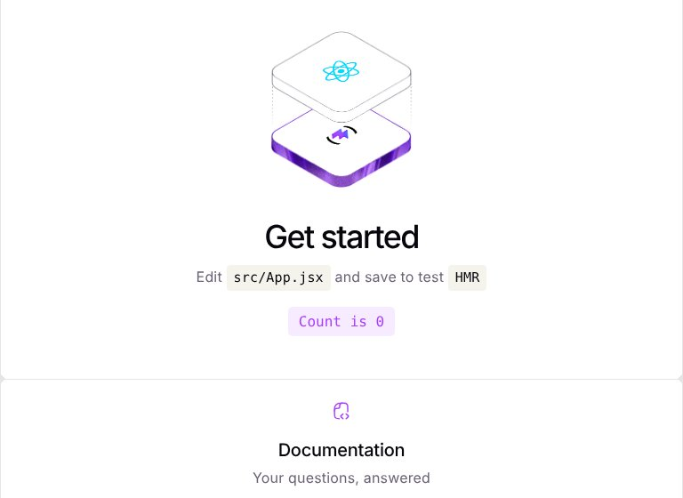
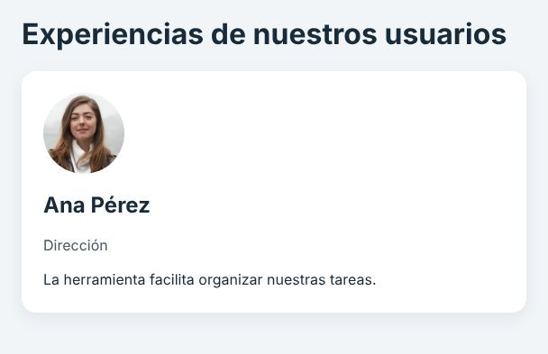
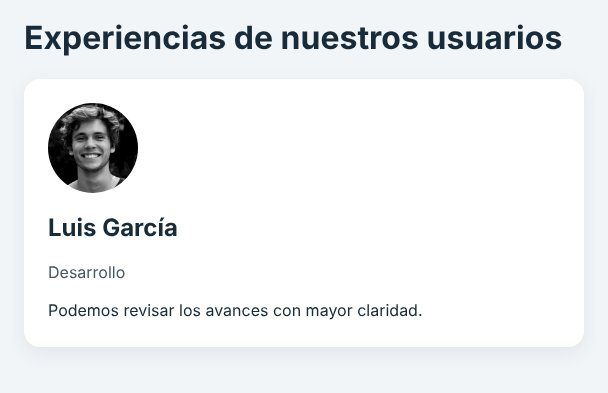
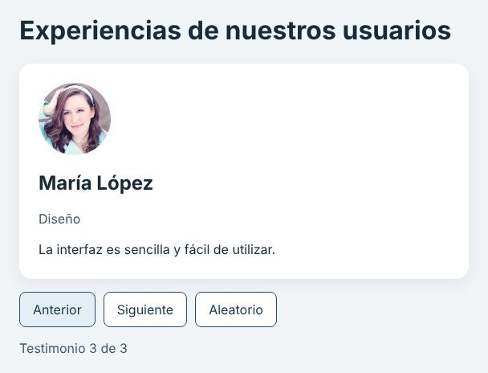
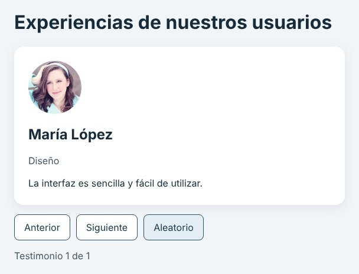
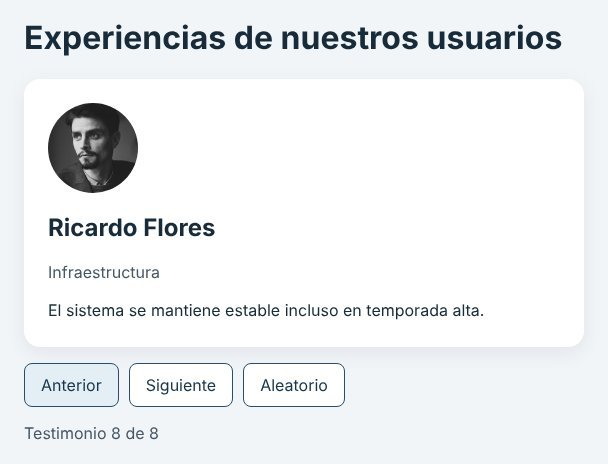
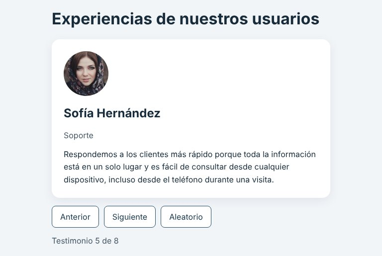
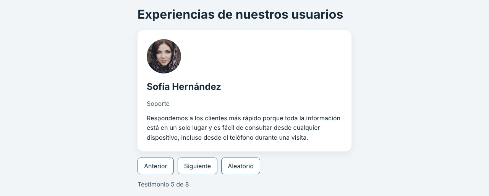
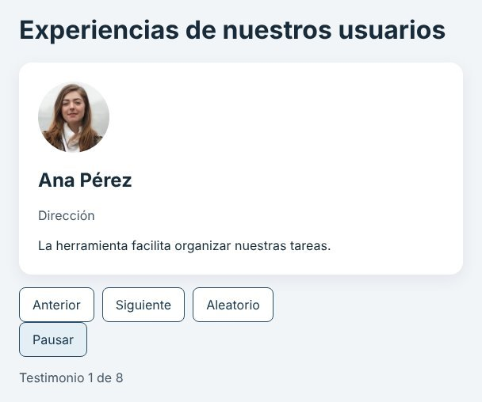
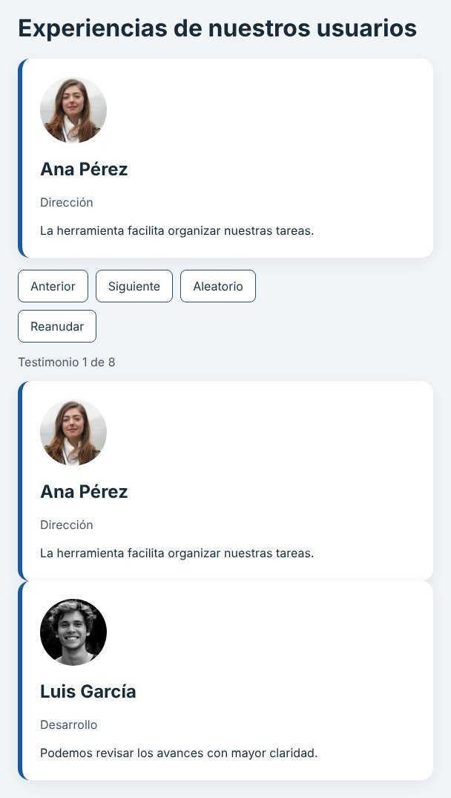

Una aplicación de React creada con Vite que muestra testimonios de uno en uno. Se organizó el frontend en
componentes, se transfirieron datos mediante props, se comunicaron los clics con callbacks y se actualizó la pantalla
mediante estado. Después se amplió con reproducción automática usando useEffect. Cada etapa se verificó contra
resultados esperados, y se provocó un error lógico a propósito para comprobar que las pruebas lo detectan.
| Integrante | Víctor Benjamín Bautista Rojas (@Br-Benja) |
|---|---|
| Materia | Ingeniería de Software · Unidad 3 · AGO–DIC 2026 |
| Práctica | Práctica inicial de React · Aplicación de testimonios con componentes y estado |
| Tecnologías | React 19.3.1 · Vite 8.3.5 · Node.js v22.22.0 · npm 10.9.4 · JavaScript (JSX) · Git y GitHub · Chromium + Playwright para verificar |
| Resultado | Etapa básica P01–P10 ✓ · ampliación A01–A07 ✓ · el error lógico provocado se detectó en 5 de 12 comprobaciones |
| Repositorio | github.com/br-benja/steamblock · carpeta testimonios/ |
| Fecha | 29 de octubre de 2026 |
Como visitante de un sitio web, quiero consultar testimonios de clientes mediante controles de navegación para conocer sus experiencias con el servicio. Los testimonios y fotografías son datos ficticios de demostración.
Construir la interfaz separando datos (data.js), presentación (Testimonial, Controls) y
coordinación (App); explicar el recorrido desde index.html hasta los componentes visibles, y comprobar la
navegación con casos normales, de límite y de datos.
App, a través de su estado index. Los hijos reciben datos o funciones; ninguno guarda una copia del índice.Se siguió la guía en orden y sin adelantar pasos: primero la etapa básica y, solo cuando la navegación manual funcionó y quedó probada, la ampliación con temporizadores. Cada avance se guardó en un commit en la rama de trabajo del repositorio.
npm run dev y revisar en el navegador.App.jsx; el script de pruebas quedó igual.[1], experimento de reutilización) se revirtieron antes del siguiente commit.| Herramienta | Para qué la usé |
|---|---|
| Node.js v22.22.0 | Ejecutar Vite, npm y los scripts de prueba en el equipo. |
| npm 10.9.4 | Crear el proyecto (npm create vite), instalar dependencias y ejecutar dev, build y preview. |
| Vite 8.3.5 | Plantilla del proyecto, servidor de desarrollo con recarga y compilación para producción en dist/. |
| React 19.3.1 | Componentes, JSX, props, useState y useEffect. |
| Git y GitHub | Un commit por etapa en br-benja/steamblock. |
| Chromium + Playwright | Navegador para revisar la interfaz, capturas en tres anchos y scripts de prueba repetibles. |
Se verificaron las versiones de Node.js y npm, se creó el proyecto con la plantilla react (JavaScript, sin TypeScript),
se instalaron las dependencias y se levantó el servidor de desarrollo.
benja@testimonios$ node -v v22.22.0 benja@testimonios$ npm -v 10.9.4 benja@testimonios$ npm create vite@latest testimonios -- --template react --no-interactive create-vite v9.3.3 o Scaffolding project in /home/user/STEAMBLOCK/testimonios... — Done. Now run: cd testimonios npm install npm run dev benja@testimonios$ cd testimonios benja@testimonios$ npm install 9 packages are looking for funding run `npm fund` for details found 0 vulnerabilities benja@testimonios$ npm run dev VITE v8.3.5 ready in 307 ms ➜ Local: http://localhost:5173/ ➜ Network: use --host to expose
create-vite (v9.3.3) hace preguntas interactivas; se agregó --no-interactive para usar directamente la plantilla indicada. Además la plantilla de Vite 8 incluye oxlint como linter, src/assets con imágenes de muestra y lang="en" en index.html; se cambió a lang="es" y título “Testimonios”.src/components/, src/data.js y src/styles.css.App.jsx y main.jsx con las versiones de la guía.App.css e index.css y se eliminaron esos archivos y src/assets.index.html con su <div id="root"></div>, la configuración y los archivos de dependencias.| Comando | Resultado |
|---|---|
npm install | Instala las dependencias declaradas. |
npm run dev | Inicia el entorno de desarrollo en http://localhost:5173. |
npm run build | Genera la versión de producción en dist/. |
npm run preview | Permite revisar localmente la compilación; no publica el sitio. |
testimonios/ ├── public/ favicon e íconos de la plantilla ├── src/ │ ├── components/ │ │ ├── Testimonial.jsx presenta una tarjeta (recibe item) │ │ └── Controls.jsx botones; avisa al padre con callbacks │ ├── App.jsx conserva el estado (index, reproduciendo) │ ├── main.jsx crea la raíz en #root y monta App │ ├── data.js arreglo de 8 testimonios ficticios │ └── styles.css estilos de toda la aplicación ├── docs/ capturas, pruebas y esta documentación ├── index.html contiene <div id="root"></div> ├── package.json dependencias y comandos ├── package-lock.json versiones resueltas └── vite.config.js
Del archivo inicial a la interfaz: index.html carga main.jsx; main.jsx crea la raíz de React en
#root y monta App; App importa los datos y renderiza Testimonial y Controls;
styles.css se importa una sola vez desde main.jsx.
| Archivo | Responsabilidad | Cómo se usó en la práctica |
|---|---|---|
data.js | Contener los objetos. | Arreglo de 8 testimonios ficticios con id único. Agregar uno solo toca este archivo. |
Testimonial.jsx | Presentar una tarjeta. | Recibe item y muestra foto, nombre, cargo y texto. No elige ni modifica datos. |
Controls.jsx | Comunicar acciones. | Tres botones que invocan onPrev, onNext y onRandom. |
App.jsx | Coordinar y conservar el estado. | index, reproduciendo, funciones de navegación, efecto del temporizador y caso vacío. |
main.jsx | Montar la aplicación. | createRoot en #root con StrictMode e import de styles.css. |
styles.css | Definir la apariencia. | Tarjeta, botones de 44 px, foco visible y ajuste a móvil. |
data.js, un cambio visual en Testimonial.jsx/styles.css y un cambio de comportamiento en App.jsx.Archivos que no se editan a mano: node_modules no se sube al repositorio; package-lock.json sí se incluye;
dist se genera al compilar. Se respetó el .gitignore de Vite.
En esta sección se documenta cada paso de la guía en el orden en que se hizo: qué archivo cambió, qué comando se ejecutó, el código, la evidencia y lo que demuestra. Cada avance se guardó en un commit (Figura 16).
| Archivo | src/data.js |
|---|---|
| Comando | Ninguno: es un módulo, todavía no se muestra |
| Commit | 3e1a7de |
const testimonios = [
{ id: 1, nombre: 'Ana Pérez', cargo: 'Dirección',
texto: 'La herramienta facilita organizar nuestras tareas.',
foto: 'https://i.pravatar.cc/150?img=32' },
{ id: 2, nombre: 'Luis García', cargo: 'Desarrollo', ... },
{ id: 3, nombre: 'María López', cargo: 'Diseño', ... }
];
export default testimonios;Es un módulo de JavaScript, no JSON: usa const y export default. Cada objeto tiene un id único que identifica al registro; el índice solo indica su posición.
| Archivo | src/components/Testimonial.jsx |
|---|---|
| Comando | Ninguno |
| Commit | 3e1a7de |
export default function Testimonial({ item }) {
const { nombre, cargo, texto, foto } = item;
return (
<article className="testimonial-card">
<img className="testimonial-photo"
src={foto} alt={`Retrato ilustrativo de ${nombre}`}
width="90" height="90" />
<h2>{nombre}</h2>
<p className="testimonial-role">{cargo}</p>
<blockquote>{texto}</blockquote>
</article>
);
}item. No importa data.js, no elige a quién mostrar y no modifica el arreglo; así la misma tarjeta sirve para cualquier persona.| Archivos | src/main.jsx · src/styles.css |
|---|---|
| Cambio | Se quitaron App.css, index.css y src/assets de la plantilla |
| Commit | 3e1a7de |
import { StrictMode } from 'react';
import { createRoot } from 'react-dom/client';
import App from './App.jsx';
import './styles.css';
createRoot(document.getElementById('root')).render(
<StrictMode>
<App />
</StrictMode>
);createRoot conecta React con el <div id="root"> de index.html y render monta App una sola vez. StrictMode se conserva porque agrega comprobaciones en desarrollo. styles.css (Anexo D) se importa una sola vez aquí.
| Archivo | src/App.jsx |
|---|---|
| Comando | npm run dev |
| Resultado | Se muestra la tarjeta de Ana Pérez |
| Evidencia | Figuras 2, 3 y 4 |
import testimonios from './data.js';
import Testimonial from './components/Testimonial.jsx';
export default function App() {
return (
<main className="app">
<h1>Experiencias de nuestros usuarios</h1>
<Testimonial item={testimonios[0]} />
</main>
);
}
npm run dev).
testimonios[0].Como pide la guía, antes de guardar se predijo qué pasaría al cambiar [0] por [1]: debía aparecer Luis García. Se comprobó y se regresó a [0].

testimonios[1]: la misma tarjeta muestra a Luis.index.html → main.jsx → App → Testimonial. Todavía no hay estado: el índice está escrito a mano.| Archivo | src/components/Controls.jsx |
|---|---|
| Comando | Ninguno |
| Commit | a174cf4 |
export default function Controls({ onPrev, onNext, onRandom }) {
return (
<div className="controls">
<button type="button" onClick={onPrev}>Anterior</button>
<button type="button" onClick={onNext}>Siguiente</button>
<button type="button" onClick={onRandom}>Aleatorio</button>
</div>
);
}onClick sin ejecutarlas (onClick={onNext}, no onNext()); React las invoca cuando ocurre el clic. Los textos visibles ya son nombres accesibles.| Archivo | src/App.jsx |
|---|---|
| Comando | npm run dev |
| Resultado | Anterior, Siguiente y Aleatorio recorren los 3 registros |
| Evidencia | Figuras 5 y 6 |
const [index, setIndex] = useState(0);
const total = testimonios.length;
function next() {
setIndex(actual => (actual + 1) % total);
}
function prev() {
setIndex(actual => (actual - 1 + total) % total);
}
function random() {
if (total < 2) return;
const salto = 1 + Math.floor(Math.random() * (total - 1));
setIndex(actual => (actual + salto) % total);
}useState(0) devuelve el valor actual index y la función setIndex. El operador % envuelve los extremos; en prev se suma total para no obtener un número negativo. Aleatorio elige un salto entre 1 y total − 1, por eso nunca repite el actual. Si total === 0 se muestra un mensaje en lugar de la tarjeta (Anexo C).
| Acción | Índice antes | Índice después | Posición visible |
|---|---|---|---|
| Inicio | — | 0 | 1 de 3 |
| Siguiente | 0 | 1 | 2 de 3 |
| Siguiente | 2 | 0 | 1 de 3 |
| Anterior | 0 | 2 | 3 de 3 |
Traza obligatoria con tres registros.


[] aparece el mensaje y no hay controles (derecha).| Archivo | src/data.js |
|---|---|
| Cambio | Se añadieron 5 testimonios ficticios (ids 4 a 8) |
| Resultado | El contador llega a 8 de 8 |
| Evidencia | Figura 7 |
| Commit | 459216c |
Uno de los registros (Sofía Hernández) tiene un texto largo a propósito para comprobar que la tarjeta ajusta el texto sin desbordarse. No hubo que tocar ningún componente: solo data.js.

| Archivo | src/App.jsx |
|---|---|
| Comando | npm run dev |
| Resultado | Avanza cada 5 s; Pausar/Reanudar; navegar a mano pausa |
| Evidencia | Figuras 12 y 13 |
| Commit | a670df3 |
const [reproduciendo, setReproduciendo] = useState(false);
useEffect(() => {
if (!reproduciendo || total < 2) return;
const intervalo = setInterval(() => {
setIndex(actual => (actual + 1) % total);
}, 5000);
return () => clearInterval(intervalo);
}, [reproduciendo, total]);
function navegar(accion) {
setReproduciendo(false);
accion();
}En el JSX se reemplazó Controls y se agregó el botón:
<Controls
onPrev={() => navegar(prev)}
onNext={() => navegar(next)}
onRandom={() => navegar(random)}
/>
{total > 1 && (
<button type="button" className="autoplay-toggle"
onClick={() => setReproduciendo(actual => !actual)}>
{reproduciendo ? 'Pausar' : 'Reanudar'}
</button>
)}
<p className="counter">
Testimonio {index + 1} de {total}
</p>useEffect y no en el cuerpo de App. La limpieza clearInterval evita intervalos acumulados. La reproducción inicia pausada para dejar leer, y se quitó aria-live del contador para no anunciar un cambio cada cinco segundos.| Archivos | src/App.jsx · src/styles.css (cambio temporal) |
|---|---|
| Cambio | Dos tarjetas extra y una sola regla nueva en .testimonial-card |
| Resultado | Las tres tarjetas recibieron el borde |
| Evidencia | Figura 15 |
<section aria-label="Ejemplos de testimonios">
<Testimonial item={testimonios[0]} />
<Testimonial item={testimonios[1]} />
</section>
/* styles.css, dentro de .testimonial-card */
border-left: 6px solid #125ca3;Después de tomar la evidencia se restauró el código con git checkout; la versión entregada no contiene el experimento.
Las pruebas se ejecutaron en el navegador Chromium. Para que fueran repetibles se escribieron dos scripts con Playwright (docs/pruebas/navegacion.cjs y docs/pruebas/autoplay.cjs) que hacen los mismos clics que una persona y usan una función comprobar() para comparar lo obtenido con lo esperado.
P01–P07 se ejecutaron con los 3 registros iniciales; P06 y P07 cambiando data.js de forma temporal. P08–P10 con los 8 registros.
| Prueba | Acción y resultado esperado | Resultado obtenido | |
|---|---|---|---|
| P01 Inicio | Ana y la posición 1 de 3 | Ana Pérez · 1 de 3 | ✓ |
| P02 Siguiente | Desde Ana muestra Luis y 2 de 3 | Luis García · 2 de 3 | ✓ |
| P03 Límite superior | Desde María, Siguiente muestra Ana | Ana Pérez · 1 de 3 | ✓ |
| P04 Límite inferior | Desde Ana, Anterior muestra María | María López · 3 de 3 | ✓ |
| P05 Aleatorio | Cambia a otra posición válida (10 veces) | 10 de 10 cambios; la fórmula nunca da salto 0 | ✓ |
| P06 Un registro | Los controles mantienen el registro | 1 de 1 con los tres botones; sin errores | ✓ |
| P07 Sin registros | Mensaje y sin controles | “No hay testimonios disponibles.” · 0 botones | ✓ |
| P08 Ampliación | Navegación completa, contador de ocho | 8 testimonios distintos; 8 → 1 | ✓ |
| P09 Presentación | Tres anchos, texto largo y teclado | Sin scroll horizontal en 320/768/1280 px; Tab, Enter y Espacio; foco de 3 px | ✓ |
| P10 Compilación | npm run build sin errores | Compila en 1.51 s; consola limpia | ✓ |


benja@testimonios$ npm run build vite v8.3.5 building client environment for production... transforming... ✓ 19 modules transformed. rendering chunks... computing gzip size... dist/index.html 0.46 kB │ gzip: 0.29 kB dist/assets/index-DcxojeVX.css 0.87 kB │ gzip: 0.50 kB dist/assets/index-CLlNo2o9.js 222.44 kB │ gzip: 69.83 kB ✓ built in 1.51s
npm run build genera la versión de producción en dist/.benja@testimonios$ node docs/pruebas/navegacion.cjs ✓ P01 inicio muestra Ana ✓ P01 inicio muestra 1 de 8 ✓ P02 Siguiente muestra Luis ✓ P02 Siguiente muestra 2 de 8 ✓ P04 Anterior desde Ana muestra el último ✓ P03 Siguiente desde el último muestra Ana ✓ P05 Aleatorio cambia en 10 de 10 intentos ✓ P08 se recorren 8 testimonios distintos ✓ P09 sin desplazamiento horizontal a 320 px ✓ P09 sin desplazamiento horizontal a 768 px ✓ P09 sin desplazamiento horizontal a 1280 px ✓ P10 consola sin errores de aplicación Todas las pruebas pasaron
Para no esperar en tiempo real se usó el reloj simulado de Playwright, que adelanta los temporizadores. El script también cuenta cuántos intervalos de 5 s siguen activos, lo que comprueba la limpieza del efecto.
| Prueba | Resultado esperado | Resultado obtenido | |
|---|---|---|---|
| A01 Activación | Reanudar inicia avances cada ~5 s | 1 → 2 → 3, uno cada 5 s | ✓ |
| A02 Pausa | Pausar mantiene la tarjeta más de 5 s | Se mantuvo 12 s en la misma tarjeta | ✓ |
| A03 Acción manual | Anterior/Siguiente/Aleatorio cambian y pausan | Cambió y el botón volvió a “Reanudar” | ✓ |
| A04 Reanudación | Nuevos avances sin aceleración | Un avance a los 5 s, ninguno a los 4.9 s | ✓ |
| A05 Límites | El último vuelve al primero | 8 de 8 → 1 de 8 | ✓ |
| A06 Pocos datos | Con 0 o 1 registro no hay intervalo | Sin botón Reanudar; 0 intervalos | ✓ |
| A07 Limpieza | Sin intervalos acumulados | 0 en pausa tras 6 cambios; 1 al reproducir | ✓ |

.autoplay-toggle queda separado (derecha).benja@testimonios$ node docs/pruebas/autoplay.cjs ✓ Inicia pausado: no avanza sin Reanudar ✓ A01 Reanudar avanza a los 5 s ✓ A01 segundo avance a los 10 s ✓ A02 Pausar mantiene la tarjeta 12 s ✓ A03 Siguiente cambia la tarjeta y pausa ✓ A03 el botón vuelve a decir Reanudar ✓ A07 tras alternar 6 veces no quedan intervalos ✓ A07 al reproducir solo existe 1 intervalo ✓ A04 reanudar avanza sin acelerar (5 s) ✓ A04 no hay avance antes de 5 s ✓ A05 el último vuelve al primero Todas las pruebas pasaron
| Archivo | src/App.jsx (el script de pruebas no se tocó) |
|---|---|
| Cambio | (actual - 1 + total) % total → (actual - 1) % total |
| Resultado | 5 comprobaciones ✗ · página en blanco al presionar Anterior desde Ana |
| Evidencia | Figura 14 |
benja@testimonios$ node docs/pruebas/navegacion.cjs ✓ P01 inicio muestra Ana ✓ P01 inicio muestra 1 de 8 ✓ P02 Siguiente muestra Luis ✓ P02 Siguiente muestra 2 de 8 ✗ P04 Anterior desde Ana muestra el último | esperado: Testimonio 8 de 8, obtenido: null ✗ P03 Siguiente desde el último muestra Ana | esperado: Ana Pérez, obtenido: null ✗ P05 Aleatorio cambia en 10 de 10 intentos | esperado: 0, obtenido: 10 ✗ P08 se recorren 8 testimonios distintos | esperado: 8, obtenido: 1 ✓ P09 sin desplazamiento horizontal a 320 px ✓ P09 sin desplazamiento horizontal a 768 px ✓ P09 sin desplazamiento horizontal a 1280 px ✗ P10 consola sin errores de aplicación | esperado: 0, obtenido: 1 5 prueba(s) fallaron
-1 % 8 vale -1, no 7. Desde Ana el índice se volvió −1, testimonios[-1] es undefined y Testimonial falló al desestructurar: Cannot destructure property 'nombre' of 'item' as it is undefined. Las pruebas de inicio y Siguiente siguieron pasando; solo el caso de límite inferior lo reveló.Al restaurar + total el script volvió a mostrar las 12 comprobaciones con ✓ (Figura 11).
Cada clic recorre siempre las mismas piezas. Con el botón Siguiente:
| Elemento | Ejemplo | Pregunta |
|---|---|---|
| Evento | clic en Siguiente | ¿Qué hizo el usuario? |
| Callback | onNext → next | ¿A quién avisa el hijo? |
| Actualización de estado | setIndex(actual => (actual + 1) % total) | ¿Qué valor nuevo se pide? |
| Renderizado | React ejecuta App con index = 1 | ¿Qué interfaz corresponde? |
| Props | item={testimonios[1]} | ¿Qué recibe el hijo? |
| Confirmación | cambian foto, nombre, texto y contador en el DOM | ¿Qué cambió en pantalla? |
| Qué baja de App | A quién | Tipo |
|---|---|---|
item = testimonios[index] | Testimonial | Objeto (datos de solo lectura) |
onPrev, onNext, onRandom | Controls | Funciones (callbacks) |
index++ no vuelve a dibujar la pantalla. setIndex le pide a React un nuevo renderizado; React calcula la interfaz y después confirma solo los cambios necesarios en el DOM.En el experimento del paso 9 se usaron tres tarjetas con el mismo componente y se cambió una sola regla de
.testimonial-card: las tres recibieron el borde.

Testimonial.| Cambio solicitado | Lugar principal del cambio |
|---|---|
| Agregar un testimonio | data.js |
| Modificar la tarjeta de todas las personas | Testimonial.jsx y sus estilos |
| Cambiar los textos de los controles | Controls.jsx |
| Cambiar el comportamiento de navegación | App.jsx |
| Modificar apariencia sin cambiar navegación | styles.css |
benja@testimonios$ git log --oneline e7eea0e docs: agrega README de entrega, registro de pruebas y respuestas a670df3 feat: agrega reproducción automática con Pausar/Reanudar (useEffect) 459216c feat: añade cinco testimonios ficticios y capturas de pruebas P09 a174cf4 feat: agrega Controls y estado de navegación (anterior, siguiente, aleatorio) 3e1a7de feat: agrega datos, componente Testimonial y primera tarjeta estática d4c89bc chore: crea proyecto testimonios con Vite (plantilla react) 5d98c40 feat: agrega index.html base de practica01
| Problema | Causa | Solución |
|---|---|---|
La plantilla de Vite no era igual a la de la guía (oxlint, src/assets, lang="en"). | Vite 8 y create-vite v9 son más recientes que la guía. | Se eliminaron App.css, index.css y src/assets; se cambió a lang="es". |
| En una captura la fotografía salía en blanco. | Las fotos vienen de una URL remota (pravatar.cc) y la captura se tomó antes de terminar la descarga. | Esperar a que la red termine antes de capturar. width y height ya reservan el espacio. |
| El botón Pausar quedaba pegado a la fila de controles. | Es un botón suelto fuera de .controls, sin margen propio. | Se agregó className="autoplay-toggle" con margin-top: 10px y se repitieron A01–A07. |
| El script de pruebas se detenía con un error de tiempo de espera en lugar de reportar ✗. | Con la página en blanco no existía .counter y el script esperaba 30 s. | Leer con espera corta y devolver null si el elemento no existe; así comprobar() reporta el fallo. |
| Se quería esperar 5 s reales en cada prueba de autoplay. | Las pruebas A01–A07 tardarían más de un minuto y serían inestables. | Reloj simulado de Playwright para adelantar el tiempo y contar los intervalos activos. |
1. ¿Qué archivo contiene la tarjeta y qué recibe item?
Respuesta: src/components/Testimonial.jsx. item recibe un solo objeto testimonio; el hijo no necesita importar
data.js porque App decide a quién mostrar y le pasa el objeto por props.
2. ¿Qué diferencia hay entre main.jsx y App.jsx?
Respuesta: main.jsx es el punto de entrada: conecta React con #root y monta la aplicación una vez.
App.jsx es el componente raíz de la interfaz: importa los datos, conserva el estado y compone a los hijos.
3. ¿Qué tendría que copiar si no existiera Testimonial?
Respuesta: todo el bloque <article> con imagen, nombre, cargo y comentario en cada lugar donde se muestra una tarjeta;
cualquier cambio habría que repetirlo en cada copia.
4. ¿Por qué no se escribe testimonios[index + 1] sin controlar el límite?
Respuesta: en el último registro index + 1 vale total, que no existe; el resultado es undefined y la tarjeta
falla al desestructurar. Con % total el índice vuelve a 0. La sección 7.3 muestra el mismo problema en el límite inferior.
5. ¿Por qué el temporizador se maneja con un efecto y el clic con un evento?
Respuesta: el clic es una acción concreta del usuario y se responde cuando ocurre. El temporizador es una sincronización con un
sistema externo (el reloj del navegador) que debe existir mientras se cumpla una condición (reproduciendo y al menos dos registros);
eso es lo que describe useEffect.
6. ¿Qué problema evita clearInterval?
Respuesta: que se acumulen intervalos. Sin limpieza, cada Reanudar (o el montaje doble de StrictMode) crearía otro
intervalo y el avance se aceleraría. A07 comprobó que tras alternar seis veces quedan 0 intervalos en pausa y 1 al reproducir.
7. ¿Por qué no existe un Hook llamado render?
Respuesta: renderizar no es algo que el componente pida: React ejecuta la función del componente cuando cambian su estado o sus
props. El componente solo devuelve JSX. createRoot(...).render(<App />) es un método de la raíz para el montaje inicial, no un Hook.
8. ¿Qué cambiaría si el arreglo llegara de una API y pudiera actualizarse?
Respuesta: los testimonios pasarían a ser estado que empieza vacío, se cargarían en un efecto con fetch, habría que
mostrar estados de “cargando” y “error”, y si cambia el tamaño del arreglo habría que asegurar que index siga siendo válido. La
dependencia total del efecto ya permitiría volver a sincronizar el autoplay.
Qué reutilicé. Testimonial sirve para cualquier persona: en el experimento se usó tres veces y un solo cambio en
.testimonial-card se vio en todas. Sin el componente habría copiado el mismo bloque de JSX en cada lugar.
Comparación con actualizar el DOM a mano. Con JavaScript puro, cada clic tendría que buscar y cambiar la foto, el texto
alternativo, el nombre, el cargo, el comentario y el contador, sin olvidar ninguno. En React describo la interfaz en función de
index y React calcula qué cambia.
Qué depende de mi diseño y qué aporta React. Mío: separar datos, presentación y coordinación, decidir que el estado viva en
App y cómo nombrar las props. React aporta el modelo de componentes, el estado, el renderizado y la confirmación en el DOM.
Un costo de React en una app pequeña. Requiere Node, npm, Vite, un paso de compilación y aprender JSX y Hooks. Una página con tres testimonios fijos podría resolverse con HTML, CSS y JavaScript.
Lo que me llevo. Las pruebas de inicio y de Siguiente pasaron aun con el error provocado; solo el caso de límite lo reveló. Por eso conviene probar casos normales, de límite y de datos (uno y cero registros), y ver fallar la prueba al menos una vez.
Una pregunta que todavía tengo. ¿Cómo decide React qué nodos del DOM reutilizar cuando una lista se renderiza con map, y por
qué la key debe ser estable como item.id?
App conserva el índice, Testimonial presenta el registro y Controls comunica acciones mediante callbacks.% resuelve los extremos; sin + total el límite inferior produce un índice negativo y la tarjeta falla.useEffect con su limpieza mantiene un solo intervalo activo; la navegación manual pausa el avance.npm run build compila sin errores.1const testimonios = [ 2 { id: 1, nombre: 'Ana Pérez', cargo: 'Dirección', 3 texto: 'La herramienta facilita organizar nuestras tareas.', 4 foto: 'https://i.pravatar.cc/150?img=32' }, 5 { id: 2, nombre: 'Luis García', cargo: 'Desarrollo', 6 texto: 'Podemos revisar los avances con mayor claridad.', 7 foto: 'https://i.pravatar.cc/150?img=12' }, 8 { id: 3, nombre: 'María López', cargo: 'Diseño', 9 texto: 'La interfaz es sencilla y fácil de utilizar.', 10 foto: 'https://i.pravatar.cc/150?img=45' }, 11 { id: 4, nombre: 'Jorge Ramírez', cargo: 'Calidad', 12 texto: 'Detectamos errores antes de cada entrega gracias a las revisiones.', 13 foto: 'https://i.pravatar.cc/150?img=53' }, 14 { id: 5, nombre: 'Sofía Hernández', cargo: 'Soporte', 15 texto: 'Respondemos a los clientes más rápido porque toda la información está en un solo lugar y es fácil de consultar desde cualquier dispositivo, incluso desde el teléfono durante una visita.', 16 foto: 'https://i.pravatar.cc/150?img=47' }, 17 { id: 6, nombre: 'Carlos Mendoza', cargo: 'Ventas', 18 texto: 'Presentar avances a los clientes ahora toma minutos.', 19 foto: 'https://i.pravatar.cc/150?img=60' }, 20 { id: 7, nombre: 'Valeria Torres', cargo: 'Recursos Humanos', 21 texto: 'La capacitación del personal nuevo fue sencilla.', 22 foto: 'https://i.pravatar.cc/150?img=44' }, 23 { id: 8, nombre: 'Ricardo Flores', cargo: 'Infraestructura', 24 texto: 'El sistema se mantiene estable incluso en temporada alta.', 25 foto: 'https://i.pravatar.cc/150?img=68' } 26]; 27export default testimonios;
1export default function Testimonial({ item }) { 2 const { nombre, cargo, texto, foto } = item; 3 return ( 4 <article className="testimonial-card"> 5 <img className="testimonial-photo" 6 src={foto} alt={`Retrato ilustrativo de ${nombre}`} 7 width="90" height="90" /> 8 <h2>{nombre}</h2> 9 <p className="testimonial-role">{cargo}</p> 10 <blockquote>{texto}</blockquote> 11 </article> 12 ); 13}
1export default function Controls({ onPrev, onNext, onRandom }) { 2 return ( 3 <div className="controls"> 4 <button type="button" onClick={onPrev}>Anterior</button> 5 <button type="button" onClick={onNext}>Siguiente</button> 6 <button type="button" onClick={onRandom}>Aleatorio</button> 7 </div> 8 ); 9}
1import { useEffect, useState } from 'react'; 2import testimonios from './data.js'; 3import Testimonial from './components/Testimonial.jsx'; 4import Controls from './components/Controls.jsx'; 5 6export default function App() { 7 const [index, setIndex] = useState(0); 8 const total = testimonios.length; 9 const [reproduciendo, setReproduciendo] = useState(false); 10 11 useEffect(() => { 12 if (!reproduciendo || total < 2) return; 13 const intervalo = setInterval(() => { 14 setIndex(actual => (actual + 1) % total); 15 }, 5000); 16 return () => clearInterval(intervalo); 17 }, [reproduciendo, total]); 18 19 function next() { 20 setIndex(actual => (actual + 1) % total); 21 } 22 function prev() { 23 setIndex(actual => (actual - 1 + total) % total); 24 } 25 function random() { 26 if (total < 2) return; 27 const salto = 1 + Math.floor(Math.random() * (total - 1)); 28 setIndex(actual => (actual + salto) % total); 29 } 30 function navegar(accion) { 31 setReproduciendo(false); 32 accion(); 33 } 34 35 if (total === 0) { 36 return <main className="app"> 37 <h1>Experiencias de nuestros usuarios</h1> 38 <p>No hay testimonios disponibles.</p> 39 </main>; 40 } 41 42 return ( 43 <main className="app"> 44 <h1>Experiencias de nuestros usuarios</h1> 45 <Testimonial item={testimonios[index]} /> 46 <Controls 47 onPrev={() => navegar(prev)} 48 onNext={() => navegar(next)} 49 onRandom={() => navegar(random)} 50 /> 51 {total > 1 && ( 52 <button type="button" className="autoplay-toggle" 53 onClick={() => setReproduciendo(actual => !actual)}> 54 {reproduciendo ? 'Pausar' : 'Reanudar'} 55 </button> 56 )} 57 <p className="counter"> 58 Testimonio {index + 1} de {total} 59 </p> 60 </main> 61 ); 62}
1import { StrictMode } from 'react'; 2import { createRoot } from 'react-dom/client'; 3import App from './App.jsx'; 4import './styles.css'; 5 6createRoot(document.getElementById('root')).render( 7 <StrictMode> 8 <App /> 9 </StrictMode> 10);
1* { box-sizing: border-box; } 2:root { 3 font-family: system-ui, sans-serif; 4 color: #172b3a; 5 background: #f2f5f8; 6} 7body { margin: 0; padding: 24px 16px; } 8.app { width: 100%; max-width: 560px; margin: 0 auto; } 9h1 { font-size: clamp(1.5rem, 5vw, 2rem); } 10.testimonial-card { 11 background: #fff; padding: 24px; border-radius: 16px; 12 box-shadow: 0 6px 20px #172b3a14; 13 overflow-wrap: anywhere; 14} 15.testimonial-photo { 16 display: block; border-radius: 50%; object-fit: cover; 17} 18.testimonial-role, .counter { color: #465766; } 19blockquote { margin: 16px 0 0; line-height: 1.6; } 20.controls { 21 display: flex; flex-wrap: wrap; gap: 10px; margin-top: 16px; 22} 23button { 24 font: inherit; min-height: 44px; padding: 10px 16px; 25 border: 1px solid #284e69; border-radius: 8px; 26 background: #fff; color: #17364d; cursor: pointer; 27} 28button:hover { background: #e4eef5; } 29.autoplay-toggle { margin-top: 10px; } 30button:focus-visible { outline: 3px solid #125ca3; outline-offset: 3px; } 31@media (max-width: 360px) { 32 .testimonial-card { padding: 18px; } 33}
1{ 2 "name": "testimonios", 3 "private": true, 4 "version": "0.0.0", 5 "type": "module", 6 "scripts": { 7 "dev": "vite", 8 "build": "vite build", 9 "lint": "oxlint", 10 "preview": "vite preview" 11 }, 12 "dependencies": { 13 "react": "^19.3.1", 14 "react-dom": "^19.3.1" 15 }, 16 "devDependencies": { 17 "@types/react": "^19.3.0", 18 "@types/react-dom": "^19.3.0", 19 "@vitejs/plugin-react": "^6.1.2", 20 "oxlint": "^1.89.0", 21 "vite": "^8.3.5" 22 } 23}